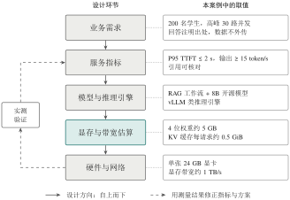

4.6 综合案例：课程知识问答助手的系统设计
假设要为一门课程搭建知识问答助手，它既要能解释课程概念，又要给出讲义出处。该怎么搭、需要什么硬件、速度够不够？本节按自上而下的顺序回答：业务需求决定服务指标，服务指标决定模型与推理引擎，模型与负载决定显存和带宽需求，最后才确定硬件。每一步都先用本章的估算公式判断方案是否可行，再用实测验证并迭代。
本节把前面各节的知识串联起来，完整演示一次系统设计。设计的顺序与本章的组织思路一致：先明确需求，再选择方案，最后评估效果（图 4-12）。

图 4-12 自上而下的系统设计流程及其在课程知识问答助手中的取值。高亮的估算环节决定了方案能否成立
4.6.1 第一步：明确需求与服务指标
某高校希望为一门课程开发问答助手，基本情况如下：
用户与负载：选课学生约 200 人，考试前的高峰时段约有 30 人同时提问；
数据：课件和讲义共约 2000 页，每学期更新；
功能：回答需注明出自哪份讲义的哪一页，便于学生核对；
约束：课程资料不得上传到外部服务，预算为一台配备单张 24 GB 消费级显卡的服务器。
将需求转化为可度量的服务指标：P95 的 TTFT 不超过 2 s；输出速度不低于每秒 15 个 token（明显快于阅读速度）；在 30 路并发下服务保持稳定；引用页码的正确率需通过人工抽查评估。
4.6.2 第二步：自上而下选择方案
应用层：先 RAG，不微调 需求的核心是“知识准确且可溯源”，而且资料每学期更新，这正是 RAG 擅长的任务（见第 4.5 节的辨析）。因此不需要训练或微调模型。处理流程固定为：解析讲义并保存课程、讲次、页码等元数据；对问题同时做向量检索和关键词检索；把检索到的片段与问题一起交给模型；生成带引用的回答。由于步骤固定，采用工作流而非智能体，便于测试和排错。2000 页资料切分后约为数万个片段，规模很小，单机向量库即可满足需求。
模型层：选择规模与精度 数据不能外传，因此在本地部署开源权重模型。考虑到显存只有 24 GB，选择约 8B 参数的指令模型。由式 （4-1） 估算：BF16 权重约 16 GB，4 位量化后约 5 GB（含元数据）。
服务层：选择推理引擎 高峰期有 30 路并发，需要连续批处理和高效的 KV 缓存管理，因此选用 vLLM 一类的推理引擎，而不是以单用户体验为主的本地运行工具。
4.6.3 第三步：估算效果，检查可行性
显存是否够用 每个请求的上下文按 4096 个 token 计（问题、检索片段与回答之和），由例 4-3 估算，每个请求的 KV 缓存约 0.5 GiB。扣除运行时开销（按约 2 GB 计）后：
BF16 权重：剩余约 6 GB，仅能容纳约 11 个请求，无法满足 30 路并发；
4 位量化权重：剩余约 17 GB，可容纳约 31 个请求，基本满足需求，但余量很小。
因此选择 4 位量化。若实测发现回答质量明显下降，可以考虑缩短检索上下文、对 KV 缓存也进行量化，或者增加一张显卡。
速度是否够快 该显卡的显存带宽约 1 TB/s。按第 4.1.2 小节的方法，4 位权重下单请求解码速度的理论上限约为 \(1000/5=200\) token/s。即便实际只能达到上限的几分之一，且多个请求共享带宽，也有较大把握满足每秒 15 个 token 的目标。预填充阶段，3000 个输入 token 约需 \(2\times8\times10^{9}\times3000\approx5\times10^{13}\) 次浮点运算，按有效算力约 \(10^{14}\) FLOP/s 计，耗时约 0.5 s，满足 TTFT 目标；高峰期的排队时间则需要实测确认。
瓶颈可能在哪里 以上估算表明，在这个场景中，主要约束是显存容量（决定并发上限），而不是峰值算力。如果实测发现响应慢的主要原因在检索环节，就应优化索引和重排序，而不是更换显卡。
4.6.4 第四步：实测验证
估算只能判断方案大致是否可行，最终必须以实测为准。建议开展以下三项实验：
单请求基线：固定输出长度，分别使用 512、2048、4096 个 token 的输入，记录 TTFT 与输出速度，检验预填充时间随输入长度的变化；
并发压力测试：保持模型、硬件和提示词不变，把并发数从 1 逐步增加到 40，绘制总吞吐与 P95 延迟随并发的变化曲线，找出 KV 缓存耗尽、开始排队的拐点；
检索效果检验：向索引中加入或移除一份带页码的讲义，观察回答内容与引用是否随之变化，并人工抽查引用的正确率。
实验报告应记录硬件型号、驱动与引擎版本、模型与量化方式、输入输出长度分布和并发设置，确保结果可以复现。
本节要点
这个案例体现了本章的核心思路：业务需求决定服务指标，服务指标决定模型与推理引擎，模型与负载决定存储与带宽需求，存储、带宽与并发需求最终决定硬件和网络。只记住工具的名称，无法完成这样的设计；掌握各层的作用与估算方法，才能在动手之前判断方案是否可行。